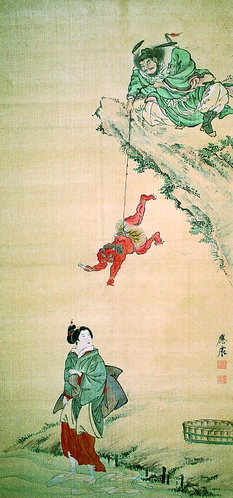

崖の上の鍾馗が、腰縄の赤鬼を吊っている。赤鬼は手紙をもって、崖下の女に渡そうとしている。
著作者：円山応震／出典：親書誌：A5_pushkin_0059：（鍾馗文使図；ショウキフミヅカイノズ）／日付：2011／資源識別子：A5_pushkin_0059_0001_0000
Copyright (c)2010- International Research Center for Japanese Studies, Kyoto, Japan. All rights reserved.